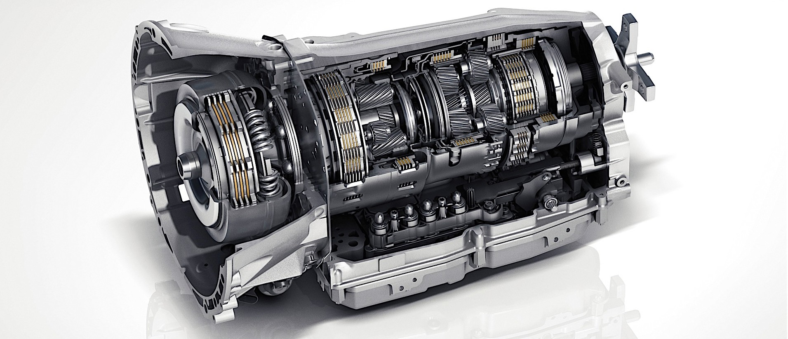

The problem AMG was trying to solve
By the mid-2000s the automatic transmission was in the middle of an arms race. Volkswagen and Audi had launched the first DSG dual-clutch boxes, BMW was persisting with its jerky single-clutch SMG, and Ferrari and Lamborghini were running automated single-clutch “F1” units. Everyone was chasing the same thing: a lightning-fast, uninterrupted gear change.
Mercedes-AMG at that time had a good automatic for its regular vehicles, but it was a torque-converter automatic, which was traditionally not the sportiest type of gearbox. However, in 2005 AMG introduced AMG SpeedShift on the SLK 55 AMG — a performance-tuned version of the then-new 7-speed 7G-Tronic (transmission family 722.9), sharing its gear ratios but with sharper AMG software. The performance torque-converter version was later branded SpeedShift TCT (“Torque Converter Technology”) and 7G-Tronic Sport.
The catch: a torque converter, however well tuned, uses a fluid coupling. That fluid slips, it stores rotational inertia, and it puts a soft, “slushy” layer between the engine and the wheels. In the mid 2000s, it was never going to match a DCT’s directness or shift speed.

Fluid slips. Fluid stores inertia. Fluid sits between you and the wheels.
The unusual fix: delete the torque converter
Rather than engineer a whole new dual-clutch box, AMG did something more surgical. They took the existing 7-speed 722.9 planetary architecture and replaced the torque converter and its lock-up clutch with a single compact wet start-off clutch — in German, a Nass-Anfahrkupplung (NAK). The result debuted in 2008 in the R230 SL 63 AMG, coupled with the legendary 6.3 litre AMG V8, and was the first transmission of its kind fitted to a production car. It was called AMG SpeedShift MCT — Multi-Clutch Technology.
One might assume the “Multi-Clutch” name refers to a dual-clutch box, but that’s not the case. The new gearbox had a single input shaft and a single multi-plate wet clutch doing the job the torque converter used to do — getting the car moving from a standstill and locking up at high speed. Instead, “Multi-Clutch” referred to the multiple internal clutches and brakes of the planetary gearset — the same clutches and brakes that the standard 722.9 torque-converter gearbox already used to select each of its seven gears.
Why a wet clutch beat the converter
The start-off clutch ran in an oil bath (a sump), which cooled it and protected its service life under repeated hard launches. More importantly for performance, the wet clutch unit had a much lower rotational inertia than the torque converter unit — around 60% lower, in fact. Less inertia and no fluid slip meant:
- Sharper throttle response and a direct, mechanical connection between engine and wheels.
- No converter slip losses, which could also help fuel economy — an unusual side-benefit for a performance box.
- The clutch engagement could be fully computer-controlled, which unlocked aggressive, precisely-metered shifts.

Explore the gearbox
Hover or tap a marker to see what each part does.
Tap a numbered marker · use Tab and Enter to step through them.
Inside the gearboxLess mass to spin up means sharper throttle response — and no fluid slip losses.
The numbers that made it matter
- Shift time: as low as 100 ms (0.1 s), depending on the drive mode.
- Weight: about 80 kg, roughly 18% lighter than AMG’s torque-converter 7G-Tronic, but more importantly, the inertia of all the rotating parts was cut by ~30%.
One tenth of a second, in the most aggressive drive mode.
Compared with AMG’s torque-converter 7G-Tronic.
The figure that mattered more than the weight saving.
The party tricks: RaceStart, rev-matching, and gear-skipping
Because the clutches were electronically orchestrated, the MCT could do things a torque-converter automatic couldn’t:
- Automatic double-declutch (rev-matching) downshifts — the box blipped the engine to match revs on the way down, exactly like a skilled driver heel-and-toeing a manual. Mercedes marketed this as the Zwischengas function.
- Multiple-gear downshifts in a single move — it could skip straight from, say, 7th to 4th to grab peak torque without stepping through every intermediate ratio.
- RaceStart — a launch-control function that managed torque and traction for a clean, repeatable standing start, coordinated by AMG’s new central AMG DRIVE UNIT controller.
Shift to any gear, from any gear, in one move — no stepping through the ratios in between.
How close did it actually get to a DCT?
- At that time, a DCT could shift a sequential change (next gear pre-selected) in roughly 50 ms — still faster than the MCT’s ~100 ms for a single shift.
- But a DCT is only that fast when the next gear is pre-armed. Ask it for an out-of-sequence change (a big multi-gear downshift) and it slows right down. The MCT could shift an out-of-sequence, multi-gear change as fast as a single one
- The trade-off for that directness was refinement. Because there was a real clutch and a relatively light flywheel instead of a fluid coupling, the gearbox was more direct and, at light throttle, occasionally jerky. That’s the physics of a direct connection, not a fault.
Only when the next gear is already pre-armed.
A 7th-to-4th downshift costs the MCT no more than a single-gear change.
The sequel: the 9-speed MCT
The concept outlived the 7-speed. From 2017 onwards, starting with the W213 E63, AMG applied the same idea to the newer 9G-Tronic (transmission generation NAG3 / 725.0), again swapping the torque converter for a wet start-off clutch, to create the world’s first 9-speed multi-clutch automatic, rated to handle around 900 N·m. It kept the double-declutch and RaceStart features, added a fuel-saving coasting function that opened the clutch when cruising off-throttle, and — according to owners — communicated far more directly over the car’s CAN bus than the older 7-speed, which had a laggier control path and noticeably delayed paddle response.
This concept was so successful that today, in the world of rapid DCTs and equally rapid traditional Torque Converter Gearboxes, you can still buy a brand new AMG with a modern, polished version of 9G-Tronic, which traces its roots back to the 7G-Tronic SpeedShift.
The world’s first 9-speed multi-clutch automatic, launched in the W213 E63.

Bottom line
I secretly love the imperfect automatic gearboxes that surfaced in the 2000s, because they were the stepping stones that eventually led to the current, perfect auto-boxes. Many such gearboxes have their own quirks and uniqueness. The AMG SpeedShift MCT is just one of them.
It is a lovely piece of lateral thinking: instead of adopting the industry’s fashionable DCT, AMG kept the proven, torque-tolerant planetary gearset of the 722.9 and attacked the one component holding it back — the torque converter. Swapping it for a computer-controlled wet clutch bought most of a DCT’s directness and speed without putting in the engineering effort to develop a full DCT.
Sources
- Mercedes-Benz 7G-Tronic transmission — Wikipediaen.wikipedia.org/wiki/Mercedes-Benz_7G-Tronic_transmission
- “Mercedes-AMG’s MCT Transmission Explained In Layman’s Terms” — autoevolutionautoevolution.com — MCT explained in layman’s terms
- “Mercedes-AMG’s MCT Transmission: Design Peculiarities and Principle of Operation” — go4transgo4trans.com — design peculiarities and principle of operation
- Mercedes-Benz 9G-Tronic transmission — Wikipediaen.wikipedia.org/wiki/Mercedes-Benz_9G-Tronic_transmission
- “New 7-speed AMG SPEEDSHIFT MCT” — paultan.orgpaultan.org — new 7-speed AMG SPEEDSHIFT MCT debuts · archived copy
- 2008 Mercedes-Benz SL 63 AMG (R230) — autoevolutionautoevolution.com — SL 63 AMG (R230) 2008
- “Getriebe fragen c55/c63” — mercedes-forum.commercedes-forum.com — Getriebe fragen c55/c63
- “2016 Mercedes-Benz E 63 S AMG SPEEDSHIFT MCT Transmission” — MB of Scottsdale blogmbscottsdale.com — E 63 S AMG SPEEDSHIFT MCT
- “AMG SPEEDSHIFT MCT 9G Automatic Transmission” — MBWorld.org forummbworld.org — AMG SPEEDSHIFT MCT 9G automatic transmission
- “AMG Speedshift-Getriebe?” — Motor-Talkmotor-talk.de — AMG Speedshift-Getriebe?
- Mercedes-Benz 722.9 Automatic Transmission — Technical Trainingstern-freunde.de — Getriebe rutscht kurz e63 AMG m157
- PistonHeads — C63 AMG Buying Guide: Powertrainpistonheads.com — C63 AMG buying guide: powertrain
- AMG SPEEDSHIFT MCT - Mercedes-AMG Youtubeyoutu.be/NVBmUNqs30g
- Transmissions — Mercedes-Benz Canada, AMG performancemercedes-benz.ca — AMG performance: transmissions
- AMG® Technologies: Transmissions — RBM of Atlantarbmofatlanta.com — AMG technologies: transmissions